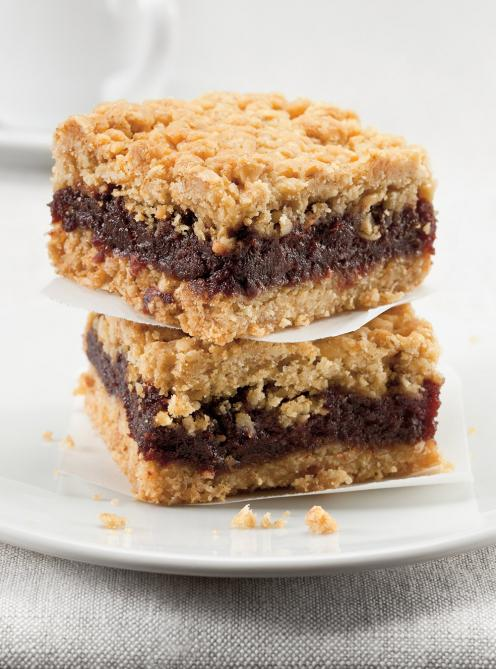

Date Squares

Description
These date squares are the perfect summer snack - sweet, crunchy and full of flavour! Perfect for a nice picnic and to bring round to parties.
Servings: 9 to 16 squares
What you'll need
- Non-stick square pan
- Large bowl
- Wooden spoon
- Medium pot
Ingredients
Filling
- 2 1/2 cups Mejdol dates, putted and chopped
- 1 cup water
- 2 tbsp. lemon juice
- 2 tbsp. brown sugar
- 1/2 tsp baking soda
Crisp
- 1 3/4 cups quick-cooking oats
- 1 cup unbleached all-purpose flour
- 3/4 brown sugar
- 1/4 tsp. baking powder
- 3/4 cup semi-salted butter, softened
Steps
- Preheat the oven to 350 degrees Farenheit with the rack in the middle position.
- Line the baking dish with a strip of parchment paper, letting it hang over both sides. Butter the other two bare sides.
-
In a pot, pring dates, water, lemon juice and brown sugar to a boil.
Add baking soda and simmer for 5 minutes, constantly stirring with a wooden spoon. Let this mixture cool.
-
In a bowl, combine the oats, flour brown sugar and baking powder. Add the softened butter and stir to combine.
Spread half the crisp in the baking dish and press firmly. Layer with the date mixture. Cover with the remaining crisp and press lightly.
-
Bake for 55 minutes or until the crisp is golden brown.
-
Let cool on a wire rack for 4 hours before unmoulding and cutting into 16 squares.